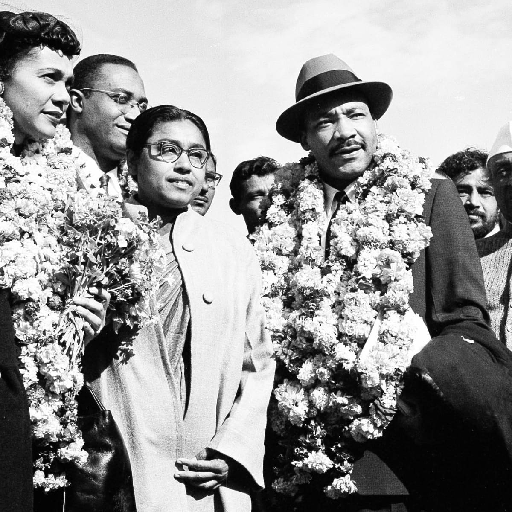

Martin Luther King was born in 1929 in Atlanta, Georgia. Along with his older sister
Christine and younger
brother Alfred Daniel Williams, he grew up in the city’s Sweet Auburn neighborhood, then home to some of
the
most prominent and prosperous African Americans in the country. A gifted student, King attended
segregated public schools and at the age of 15 was admitted to Morehouse College, the alma mater of both
his father and maternal grandfather, where he studied medicine and law.
Although he had not intended to follow in his father’s footsteps by joining the ministry, he changed his
mind under the mentorship of Morehouse’s president, Dr. Benjamin Mays, an influential theologian and
outspoken advocate for racial equality. After graduating in 1948, King entered Crozer Theological
Seminary in Pennsylvania, where he earned a Bachelor of Divinity degree, won a prestigious fellowship
and was elected president of his predominantly white senior class.
King then enrolled in a graduate program at Boston University, completing his coursework in 1953 and
earning a doctorate in systematic theology two years later. While in Boston he met Coretta Scott, a
young singer from Alabama who was studying at the New England Conservatory of Music. The couple wed in
1953 and settled in Montgomery, Alabama, where King became pastor of the Dexter Avenue Baptist Church.
The Kings had four children: Yolanda Denise King, Martin Luther King III, Dexter Scott King and Bernice
Albertine King
During his trip to India, he had a chance to meet the followers and family of Gandhi,the
man he described in
his autobiography as “the guiding light of our technique of nonviolent social change.” King also authored
several books and articles during this time". Gandhi was known for his nonviolent protests against the
British
Empire who ruled India

Martin Luther King in India in 1959
Summary of MLK and the activists who made changes
Martin Luther King Jr was a Civil Rights Activist who fought for equal rights of Americans
Rosa Parks was arrested for refusing to give up her seat to a white man, resulting in the Montogmery bus
boycott